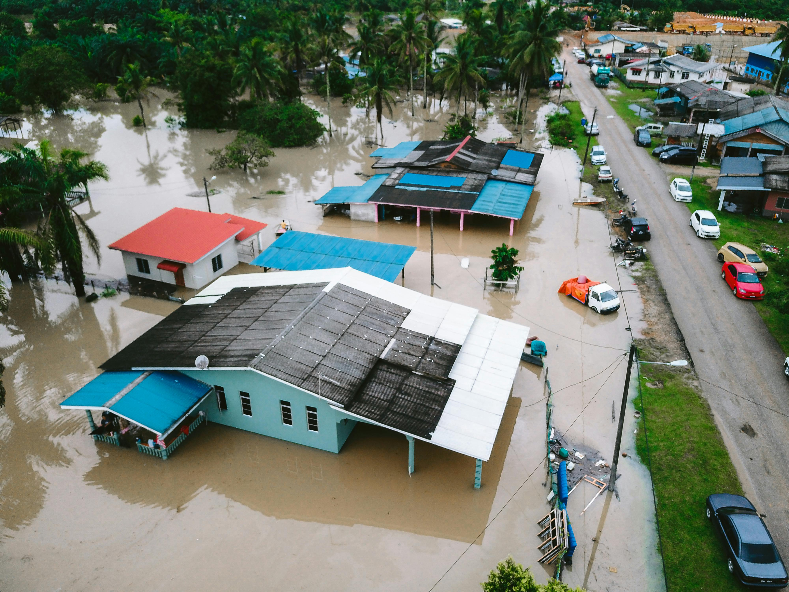
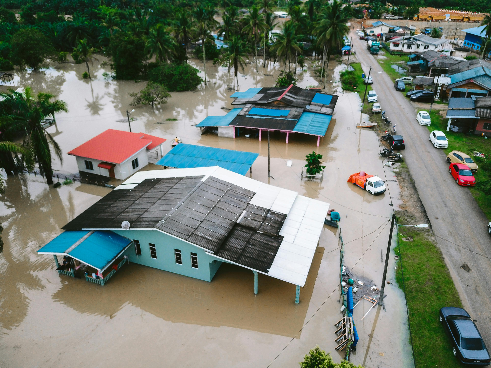

O Problema Alarmante das Enchentes no Brasil
As enchentes deixaram de ser meros eventos climáticos para se tornarem tragédias recorrentes e anunciadas em nosso país. Dados do Atlas Brasileiro de Desastres Naturais são um duro lembrete da nossa vulnerabilidade: entre 1991 e 2022, foram mais de 21 mil inundações, impactando a vida de 110 milhões de pessoas.
Os anos de 2023 e 2024 agravaram este cenário, com milhões de brasileiros afetados e centenas de vidas perdidas, como vimos na devastadora situação do Rio Grande do Sul. Esta realidade sublinha a urgência de soluções eficazes e proativas.
As Dores que Buscamos Sanar:
Falta de informações rápidas e confiáveis
A ausência de alertas ágeis e precisos sobre alagamentos transforma momentos críticos em verdadeiro caos. Alarmantemente, dados da pesquisa Datafolha indicam que 6 em cada 10 brasileiros nunca receberam qualquer tipo de alerta de risco.
Dificuldade na evacuação preventiva
Mais de 8 milhões de brasileiros residem em áreas de risco, frequentemente desprovidas de infraestrutura básica de drenagem. Essa realidade agrava a vulnerabilidade e torna a evacuação um desafio complexo e perigoso durante eventos extremos.
Carência de sistemas integrados e eficazes
Existe uma lacuna significativa em sistemas que verdadeiramente unam dados meteorológicos complexos, modelagem preditiva avançada e, crucialmente, alertas direcionados que cheguem de forma clara e eficaz aos moradores que precisam da informação.
A AquaDefend nasce para preencher a lacuna entre a previsão avançada e a ação comunitária informada, transformando dados em proteção.
 
